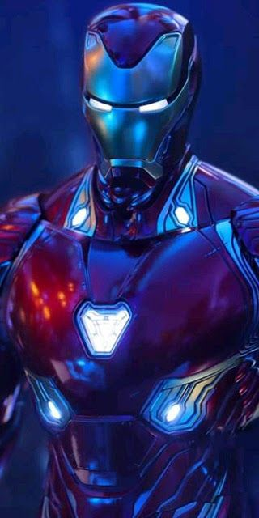
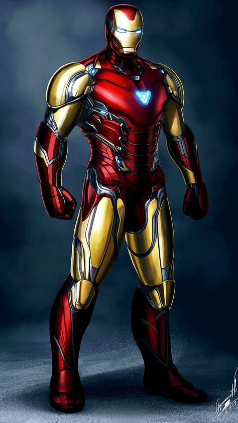
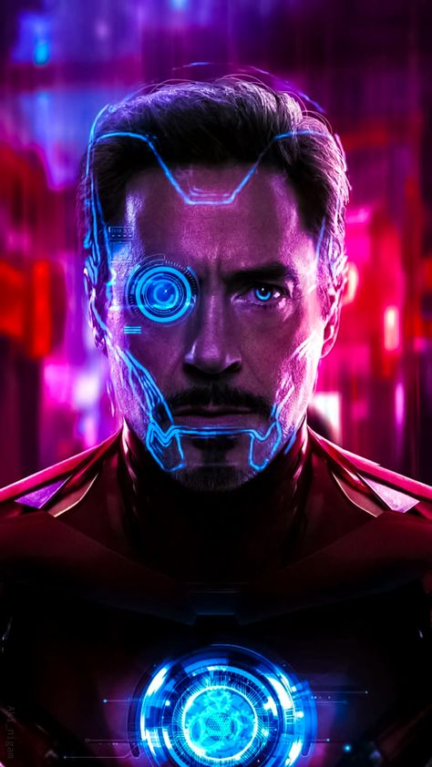
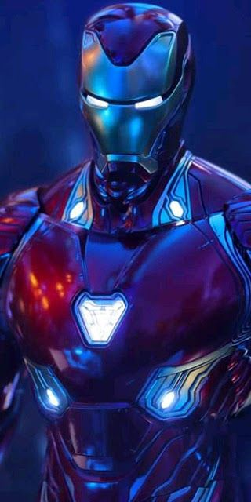
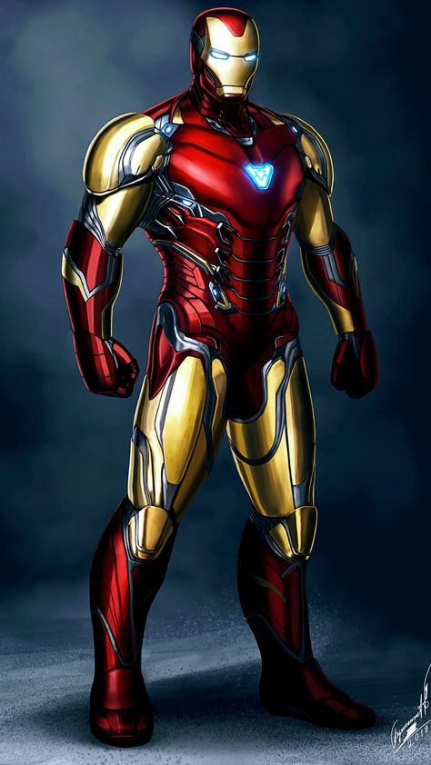
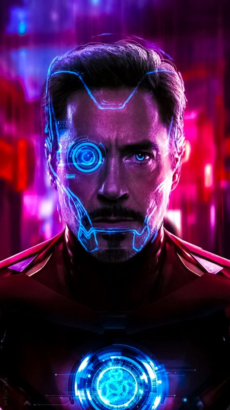

A wealthy American business magnate, playboy, philanthropist, inventor and ingenious
scientist, Anthony Edward Stark suffers a severe chest injury during a kidnapping.
When his captors attempt to force him to build a weapon of mass destruction, he instead
creates a mechanized suit of armor to save his life and escape captivity. Later, Stark
develops his suit, adding weapons and other technological devices he designed through his
company, Stark Industries. He uses the suit and successive versions to protect the world as Iron Man.
Although at first concealing his true identity, Stark eventually publicly reveals himself
to be Iron Man.

 




